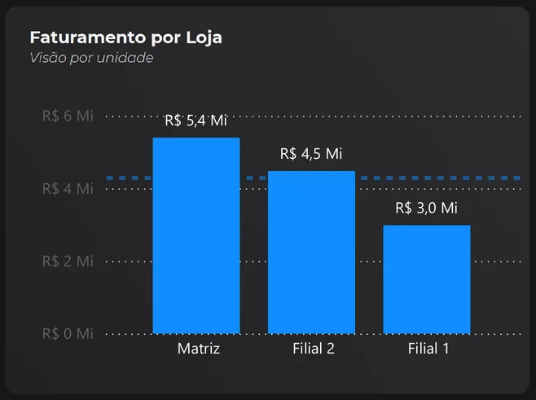
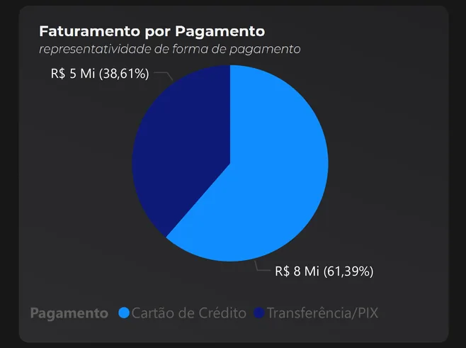

Olá, eu sou
Victor Queiroz Bazarim
%2021.26.46_5df9bf81.png)
- Análise de dados
- Inteligência comercial
- Melhoria de processos
Estudante de Ciência da Computação, atuo na criação e manutenção de dashboards, no acompanhamento de KPIs, na análise de informações e na automação de processos.
Competências
Cada área vem com a evidência: um projeto publicado, um certificado ou a experiência descrita no currículo.
-
Dashboards e BI
Criação e manutenção de dashboards e acompanhamento de KPIs.
-
Análise de dados
Análise de informações para transformar dados em insumos para a tomada de decisões.
-
Automação de processos
Automação de tarefas repetitivas com Python, para ganhar eficiência operacional.
-
Inteligência comercial
Pricing, suporte a áreas comerciais e relacionamento com clientes, com soluções voltadas à eficiência operacional e à tomada de decisões.
Evidências
- Experiência profissional, detalhada no currículo (PDF)
Projetos
Dashboards em Power BI, análise exploratória e automações em Python. Os números nas capas são os que aparecem em cada projeto.
-
Projeto em destaque
Dashboard de Gestão de Vendas

Faturamento por loja: Matriz R$ 5,4 mi, Filial 2 R$ 4,5 mi e Filial 1 R$ 3,0 mi. 
Faturamento por pagamento: cartão de crédito 61,39% (R$ 8 mi) e Transferência/PIX 38,61% (R$ 5 mi). Desempenho de vendas por loja, forma de pagamento, período e produto em um só painel.
- Valor faturado
- R$ 12,9 mi
- Comissão
- R$ 643 mil
- Ticket médio
- R$ 51,6 mil
Indicadores e recortes do painel com o filtro de produto “Bolsa” selecionado. Com todos os produtos, as vendas somam R$ 40,1 mi.
-
Dashboard de Produção
Eficiência, qualidade e disponibilidade da produção, com filtros por operador e período.
Disponibilidade acumulada77,69%Qualidade99,32%Quantidade produzida: 3.084.251. Rejeitada: 21.076.
-
Análise Exploratória de Dados Municipais
Aspectos demográficos, econômicos e sociais de 5.570 municípios brasileiros.
r = 0,85
correlação entre PIB e população em 5.570 municípios brasileiros
-
Monitoramento Estratégico de Vendas, Custos e Lucros
Comportamento de compra e perfil dos clientes por salário, escolaridade, estado civil e canal de compra.
Dois painéis no mesmo relatório:
- Comportamento de compra
- Perfil dos clientes
-
Robô de Automação de Tarefas
Cadastro automático de produtos em um sistema online a partir de uma base CSV.
-
Programa para Junção de Arquivos PDF
Combina os PDFs de uma pasta, em ordem alfabética, em um único documento.
-
Chat para Empresas
Aplicativo de chat em tempo real com Python e Flet, com feedback visual de mensagens e novas entradas.

Sobre mim
Interessado nas complexidades digitais, esse sou eu.
Sou o Victor, apaixonado por tecnologia, videogames e novos desafios. Estudante de Ciência da Computação, acredito que as melhores soluções são aquelas que simplificam o complexo e geram resultados reais.
Com formação técnica em Administração e Serviços Jurídicos, construí uma trajetória que une gestão, análise e tecnologia. Já atuei com processos administrativos, Pricing e análise de dados, desenvolvendo dashboards, acompanhando indicadores e implementando automações. Atualmente, busco evoluir em Power BI, Excel, SQL e Python, com foco em transformar dados em informações relevantes para a tomada de decisões.
Além da vida profissional, gosto muito de games, sou curioso por desenvolvimento web e estou sempre disposto a aprender, explorar novas tecnologias e encarar novas oportunidades.
Contato
Estou sempre disposto a encarar novas oportunidades. Escreva pelo formulário ou direto no meu e-mail.